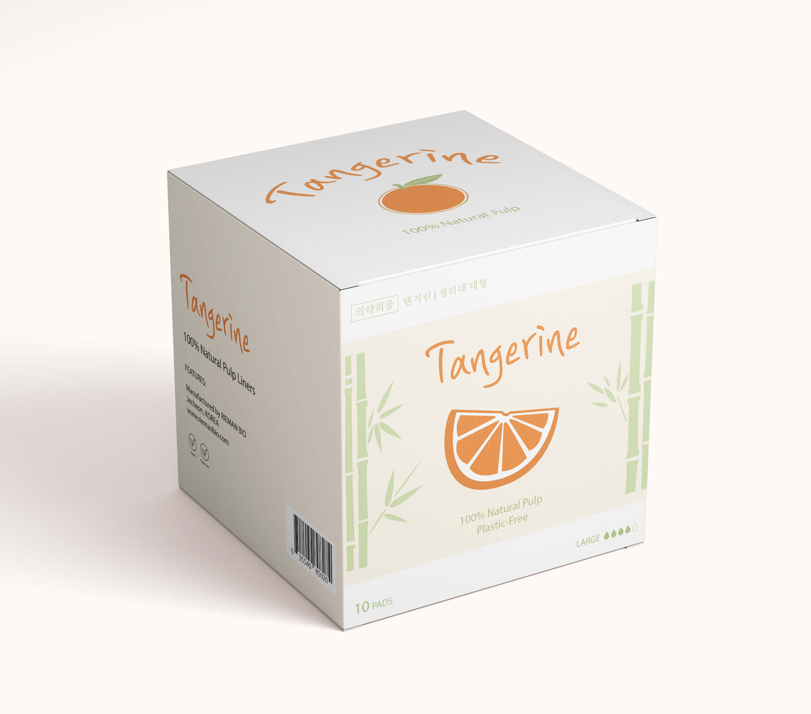
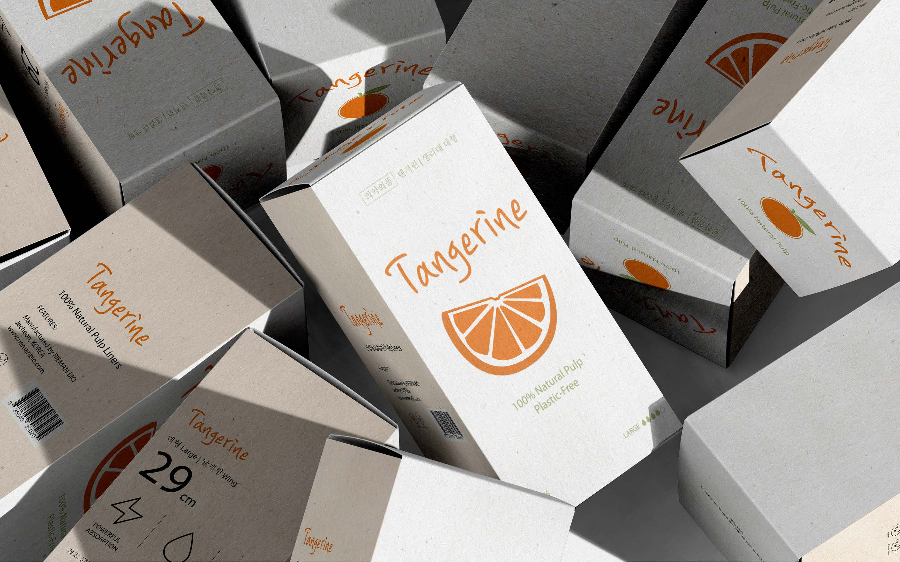
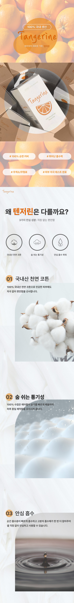
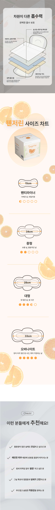

01
기획
본질에 집중하는 리만바이오 브랜드 철학 위에 '텐저린'만의 생기 넘치는 에너지와 여유를 더해, 더욱 생동감 있는 라인으로 리디자인했습니다.
- 생동감 넘치는 에너지를 담은 브랜드 아이덴티티 수립
- 고객의 삶에 긍정적인 변화를 더하는 라이프스타일 지향

02
전개도
텐저린의 상큼한 무드를 시각적으로 극대화할 수 있도록 오렌지 컬러를 핵심으로 한 그리드 시스템과 패키지 레이아웃을 설계했습니다.
- 컬러 포인트와 타이포그래피 중심의 레이아웃 설계
- 제품의 일관성을 유지하는 그래픽 요소의 유기적 배치

03
목업
브랜드 네임에 맞게 오렌지 톤으로 해석하여, 건강함과 에너지가 느껴지는 제품 목업을 구현했습니다.
- 오렌지 테마의 생동감 넘치는 패키지 렌더링
- 브랜드 정체성이 드러나는 비주얼 요소 배치

04
상세페이지
100% 국내 생산의 신뢰성과 독보적인 기술력을 감각적으로 시각화하여, 제품의 가치가 직관적으로 전달되는 상세페이지를 완성했습니다.
- 복잡한 기술 정보를 한눈에 이해시키는 인포그래픽 설계
- 브랜드의 생동감을 강조하는 감각적인 제품 컷 배치

